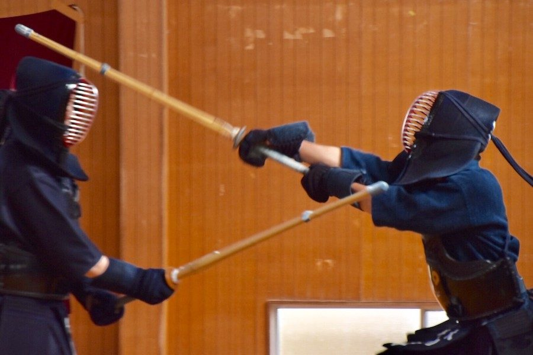

ABOUTサークル紹介
当会は早稲田大学公認の剣道サークルです。他大学の学生も在籍するインカレサークルで、1962年に設立され、今年度で創立65年目を迎える伝統あるサークルでもあります。
経験者では、四段を持ち高校時代に全国区の活躍をしたような人から、2、3年前に初めて竹刀を握ったという人まで様々おり、それ以外にも大学に入って初めて剣道を始めた全くの初心者や、アメリカ、東アジア、ヨーロッパなど様々な国から来た留学生も在籍しており、各々のレベルに合わせた剣道がここではできます。
稽古の時は真面目に練習し、それ以外はみんなで遊んだりふざけ合ったりしています。そのため礼節を重んじながらも和気藹々と活動に励むことができます。
また新宿区剣道連盟の稽古の場をお借りしているので、大学生同士だけではなく高段の先生方とも稽古できます。練習はすべて自由参加ですから、毎回来てもいいですし、他のサークルを兼任している人は週1・月1だけという人もいます。
少しでも興味のある方は、是非一度気軽に見学に来て下さい。防具を持ってきたらすぐにその日から一緒に稽古できます。お待ちしております。
EVENT主な行事
| 試合 | 早慶戦・早明戦・二季杯（それぞれ前期・後期の年2回）などの試合があります。結果は試合結果をご覧ください。 |
|---|---|
| 宿泊行事 | 春・夏の年2回の合宿と、スキー合宿。 |